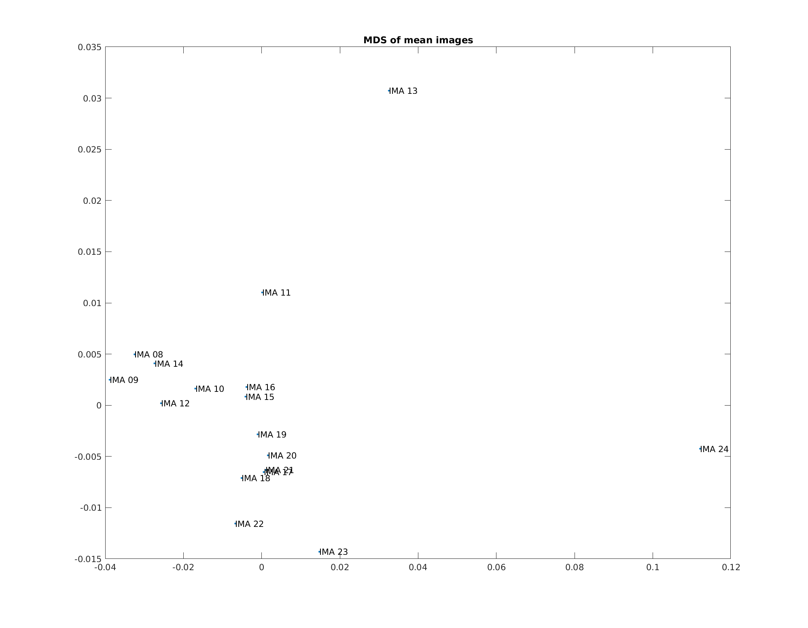

advantages
1-
imposes directory structure
2-
saves additional information in .json
3-
parallelizes preprocessing
4-
spm scripts can read .json files and build 1st level analysis
gedit ~/.dcm2nii.ini &
make sure bids .json sidecar is outout and filename includes:
monkeyNameDate_IMA_05.nii
isGZ=0
isBIDS=1
filename=%n_IMA_%2s
gedit ~/.bashrc &
add these lines to your .bashrc
#fsl data ouput
FSLOUTPUTTYPE=NIFTI
export FSLOUTPUTTYPE
gedit ~/.bashrc &
add these lines to your .bashrc
export ANTSPATH=/mnt/.autofs/storage/gbw-s-neu01_fmri-monkey-03/PROJECT/codeshare/toolbox/ants/bin
export PATH=${ANTSPATH}:$PATH
set up the paths
add the path to your mipipe dir
preproc_dir = '/data/fmri_monkey_03/PROJECT/Sjoerd/FaceBody_Discrimination/fMRI/daily_fMRI_results/mipipe/';
addpath(preproc_dir);
params = set_preproc_paths(preproc_dir);
path to base directory where pre-processing ouput goes
params.base_dir = '/data/fmri_monkey_03/PROJECT/Sjoerd/FaceBody_Discrimination/fMRI/daily_fMRI_results/tank180425_test/';
path to dicoms
params.dicom_dir = '/data/fmri_archive_01/RAW/Tank/Tank180425_DICOM/MONKEY_FUNCTIONAL_20180425_185355_274000/';
path to template image
params.template = '/data/fmri_monkey_03/PROJECT/Sjoerd/FaceBody_Discrimination/fMRI/template/tank/tank_anat.nii';
specify the parameters for analysis
params.tr_no = 450; %# of trs per run
params.image_no = 1; %image number to use for masks
params.smooth.fwhm = 1.5; %fwhm for smoothing
specify whether to check images
params.check_mask = 1;
params.check_coregister = 1;
convert dicom to nifti and remove incomplete runs
input = convert_dcm2niix_afni(params.dicom_dir, params.base_dir, params.shell_script_path);
input = cleanup_file_list_using_tr_no(params.base_dir, input, params.tr_no);
mask and perform quality assessment
functional_mask = preproc_mask_non_workflow(input, params);
params.image_no = preproc_quality_assessment(input, functional_mask, params);

Outlier Detection [outlier]: The mean count of outliers found in each volume using the 3dToutcount command from AFNI. Lower values are better.
Median Distance Index [quality]: The mean distance (1 – spearman’s rho) between each time point’s volume and the median volume using AFNI’s 3dTqual command. Lower values are better.
temporal SNR [tSNR]: Mean intensty over time divided by standard deviation over time within brain mask. Higher values are better.
MDS of correlation of mean images: closer points are more similiar images. Farther points are less similiar. Often indicates ghosting.
runs2remove = [13 24];
[input, params] = remove_outlier_runs(runs2remove, input, params);
define preprocessing steps
step_no_function_pair = {2, 'reorient_sphinx_lsp'; ...
3, 'slice_timing_afni_alt_z2_preproc'; ...
NaN, 'preproc_mean_mask_meanmasked_dilate_smooth'; ...
4, 'slice_by_slice_within_run'; ...
NaN, 'make_mean_target'; ...
5, 'motion_realign_across_runs'; ...
NaN, 'preproc_mask_mean_target'; ...
NaN, 'coregister_ants_preproc'; ...
6, 'apply_coregister_4D_ants_preproc'; ...
7,'fsl_smooth_preproc'};
run all processing steps
tic
workflow = loop_workflow_steps(step_no_function_pair,input,params);
toc
loops through each step
ouput of step used as input of the next step
for i_step_no = 1:size(step_no_function_pair, 1)
%get current function and step number
current_function = step_no_function_pair{i_step_no, 2};
current_step_no = step_no_function_pair{i_step_no, 1};
%run current step
[output, params] = run_workflow_step(input, get_preproc_functions(current_function), current_step_no, params);
%assign output of current step to input of next step
input = output;
end
if function performed on each image
parfor loop through all images and run current step
parfor i = 1:numel(input.file_list)
input_file = #name of input image
ouput_file = #name of ouput image
if preproc_function.is_regressor_created
regressor_file_name = preproc_function.function_call(input_file, ouput_file, params);
add_workflow_step_to_json_w_regressor(input_file, ouput_file, preproc_function, step_no, regressor_file_name);
else
preproc_function.function_call(input_file, ouput_file, params);
add_workflow_step_to_json(input_file, ouput_file, preproc_function, step_no);
end
end
if function not performed on each run
params = preproc_function.function_call(input, params);
function where
1:
regressor created and image
2:
loops through each image
function regressor_name = example_function(input_file, output_file, params)
motion_regressor_name = motion_correction_function(input_file, output_file, params.mask);
regressor_name = {'motion_regressor',motion_regressor_name};
end
function where
1:
no
regressor created and image
2:
loops through each image
function example_function(input_file, output_file, params)
smooth_function(input_file, output_file);
end
function where
1:
no
regressor created and image
2:
no
loops through each image
function params = example_function(input, params)
params.mean_image_masked = mask_function(params.mask,params.mean_image);
end
case 'slice_timing_afni_alt_z2_preproc'
preproc_function.function_call = @slice_timing_afni_alt_z2_preproc;
preproc_function.function_name = 'slice_timing_afni_alt_z2_preproc';
preproc_function.function_description = 'slice timing correction using afni with timing set to alt+z2';
preproc_function.prefix = 'st';
preproc_function.is_directory_created = 1;
preproc_function.is_regressor_created = 0;
preproc_function.is_each_image_processed = 1;
each step has a numbered folder
also regressors, masks and coregistration steps have a sepearate folder

each image file is followed by a suffix explaining the steps performed
Tank180425_IMA_08_r_st_u_mr_nr_s.nii
realign (r) -> slice timing (st) -> slice-by-slice (u) -> aligned across runs (mr) -> ANTS non-rigid registration (nr) -> smoothed (s)

each image is accompanied by json file with the same name
(below) abbreviated example of .json file
{"Modality":"MR",
"MagneticFieldStrength":3,
"Manufacturer":"Siemens",
"ManufacturersModelName":"Prisma_fit",
"InstitutionName":"KUL",
"InstitutionalDepartmentName":"Department",
"InstitutionAddress":"Herestraat_49_Leuven_Brussels_BE_3000",
"ProcedureStepDescription":"Monkey_Functional",
"SoftwareVersions":"syngo_MR_E11",
"MRAcquisitionType":"2D",
"SeriesDescription":"ep2d_p3_1.25x1.25x1.2mm",
"ProtocolName":"ep2d_p3_1.25x1.25x1.2mm",
"ScanningSequence":"EP",
"SeriesNumber":23,
"AcquisitionTime":"23:23:39.415000",
"SliceThickness":1.2,
"SpacingBetweenSlices":1.2,
"EchoTime":0.013,
"RepetitionTime":2,
"FlipAngle":84,
"PartialFourier":0.75,
"BaseResolution":84,
"ShimSetting":[-686,4128,-1714,698,-436,-4451,1936,-69],
"TxRefAmp":55.6199,
"ReceiveCoilName":"8ChConnectorBox",
"ReceiveCoilActiveElements":"RX1-8",
"PercentPhaseFOV":100,
"BandwidthPerPixelPhaseEncode":48.924,
"PixelBandwidth":1655,
"PhaseEncodingDirection":"j",
"SliceTiming": [0.9875,0,1.0275,0.0375,1.0675,0.0775,1.1075,0.1175,1.1475,
0.1575,1.1875,0.1975,1.225,0.2375,1.265,0.275,1.305,0.315,1.345,0.355,1.385,0.395,1.425,0.435,1.4625,0.475,1.5025,0.5125,1.5425,0.5525,1.5825,
0.5925,1.6225,0.6325,1.6625,0.6725,1.7,0.7125,1.74,0.75,1.78,0.79,1.82,0.83,1.86,0.87,1.9,0.91,1.9375,0.95],
"InPlanePhaseEncodingDirectionDICOM":"COL",
"ConversionSoftware":"dcm2niix",
"ConversionSoftwareVersion":"v1.0.20171215 (OpenJPEG build) GCC5.3.1",
"preproc_step_2_name":"reorient_sphinx_lsp",
"preproc_step_2_description":"reorients image acquired in sphinx position and HeadFirstProne orientation and labelled as LSP correctly",
"preproc_step_2_prefix":"r",
"preproc_step_3_name":"slice_timing_afni_alt_z2_preproc",
"preproc_step_3_description":"slice timing correction using afni with timing set to alt+z2",
"preproc_step_3_prefix":"st",
"preproc_step_4_name":"slice_by_slice_lucas_kanade",
"preproc_step_4_description":"runs slice by slice lucas kanade motion realignment",
"preproc_step_4_prefix":"k",
"motion_regressor":"/data/fmri_monkey_03/PROJECT/Sjoerd/FaceBody_Discrimination/fMRI/daily_fMRI_results/tank180425/kanade//funct/regressor/slice_by_slice_lucas_kanade/Tank180425_IMA_23_r_st_k_Nbasis12_masknorm0.10_stats.txt",
"preproc_step_5_name":"motion_realign_across_runs",
"preproc_step_5_description":"motion realignment across runs",
"preproc_step_5_prefix":"mr",
"preproc_step_6_name":"apply_coregister_4D_ants_preproc",
"preproc_step_6_description":"applies ants",
"preproc_step_6_prefix":"nr",
"preproc_step_7_name":"fsl_smooth_preproc",
"preproc_step_7_description":"smooths each images with a fwhm kernel",
"preproc_step_7_prefix":"s",
"spm_order_file":"/data/fmri_monkey_03/PROJECT/Sjoerd/FaceBody_Discrimination/fMRI/daily_spm_matFiles/Tank20180425/Tank_20180425_2327_Q_spm.mat",
"pca_regressor":"/data/fmri_monkey_03/PROJECT/Sjoerd/FaceBody_Discrimination/fMRI/daily_fMRI_results/tank180425/kanade/funct/regressor/glm_denoise/Tank180425_IMA_23_r_st_k_mr_nr_s_pca_glmDenoise.txt",
"pca_regressor_no":7}